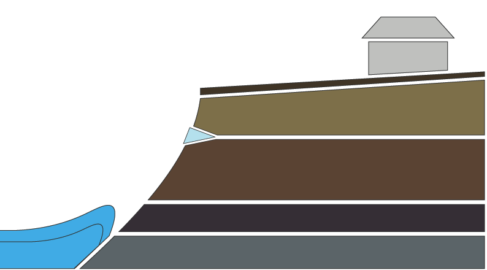

Erosion Processes
Bluffs are a dynamic part of the landscape, continuously changing, and constantly moving toward a stable slope angle. For bluffs composed of glacial till such as those in Wisconsin, the stable angle is approximately 22-degrees. Bluff erosion is caused by many factors. The most significant include:
- Wave action
- Lake level change
- Surface runoff
- Groundwater flow
- Freeze & thaw
- Wind
Each erosion factor is depicted in the following diagram. Click the button below or continue scrolling to learn more about the various causes of erosion.

surface runoff
freeze/thaw
wind
groundwater flow
lake level
wave action